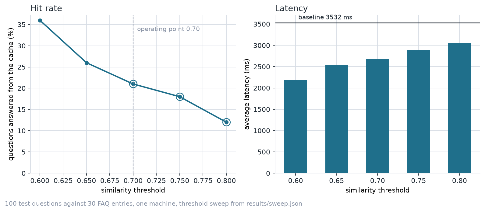
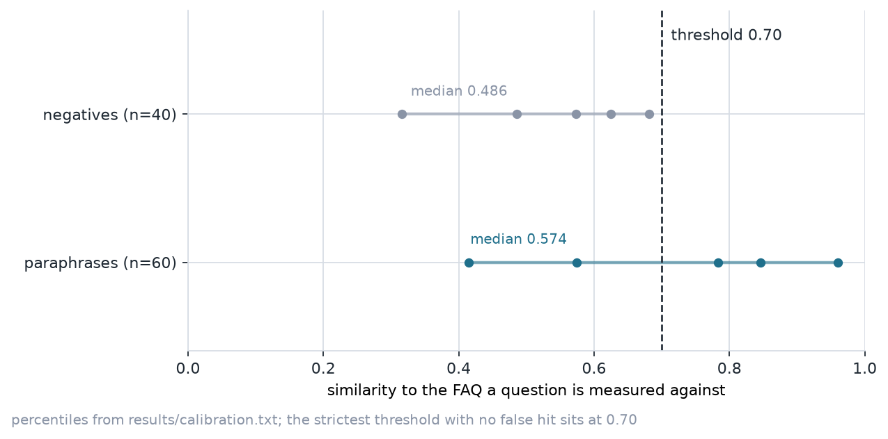

Threshold sweep and latency measurements from 1,000 labelled questions against 300 FAQ entries, on one machine with a local model. No numbers on this page were estimated.
1,000 questions asked of 300 FAQ entries: 600 paraphrases that an FAQ
should answer and 400 questions no FAQ covers. Every number is a timed
call to a local model through Ollama, recorded by the run scripts in
scripts/. The full report lives in the repository README.
| Threshold | Hit rate | False hits | Wrong FAQ | Average latency |
|---|---|---|---|---|
| 0.60 | 47.2% | 100 of 400 | 55 | 2955 ms |
| 0.65 | 38.0% | 55 of 400 | 40 | 3374 ms |
| 0.70 | 31.5% | 31 of 400 | 29 | 3736 ms |
| 0.75 | 25.1% | 11 of 400 | 16 | 4055 ms |
| 0.80 | 19.6% | 2 of 400 | 5 | 4290 ms |
No threshold on the grid served none of the 400 questions no FAQ covers, so the operating point is the highest hit rate within a stated budget of one false hit in a hundred negatives: 0.80, at 0.5%.


At the operating point of 0.80 the cache answers 196 of 1,000 questions from the FAQ set or a stored answer, taking 81.6 ms on a hit and asking the LLM 804 of the 1,000 calls. 45 questions carry a negation word and every one of them is refused by the guard and answered by the LLM, which is the safe direction to fail in. The 804 misses still go to the model.
The GitHub Pages URL was requested when this report was regenerated and
answered HTTP 200 at 2026-11-07T20:25:07Z, so the site is being served
and this committed copy is the record. The status is stored with the
measured numbers as pages_status in
results/summary.json and is refreshed by
scripts/check_pages.py.